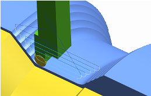

NX can now automatically detect and avoid collisions during engage or retract motions and stepovers. To enable this functionality, select the following check boxes in the Non Cutting Moves dialog box:
For Automatic Engage
For Automatic Retract

|
Application |
Manufacturing |
|
Prerequisite |
Turning operation |
|
Location in dialog box |
Non Cutting Moves dialog box→More tab →Additional Checking group |